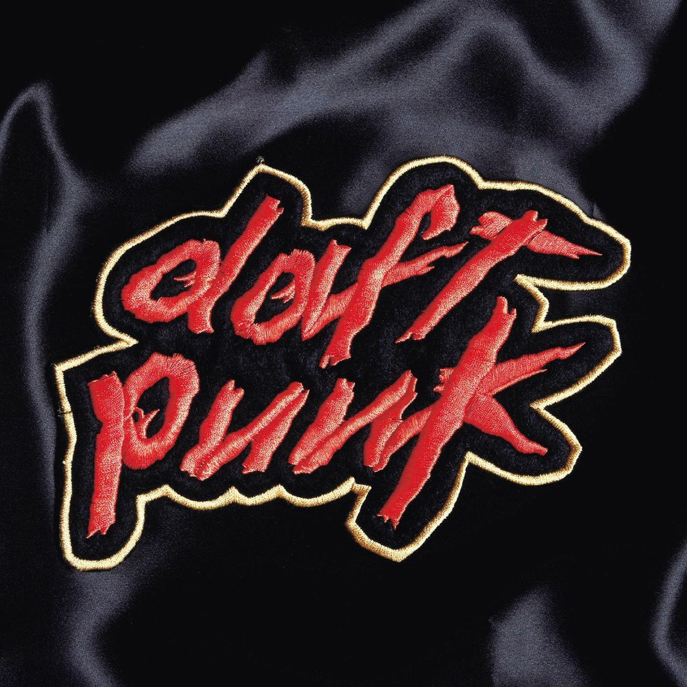
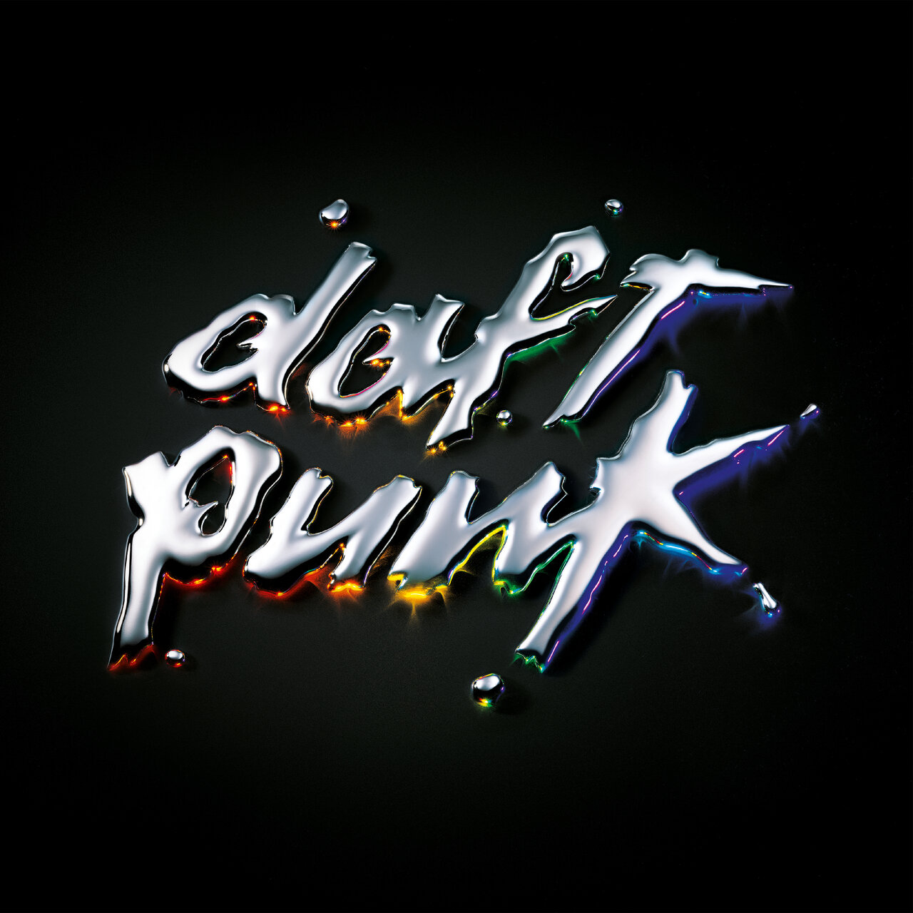
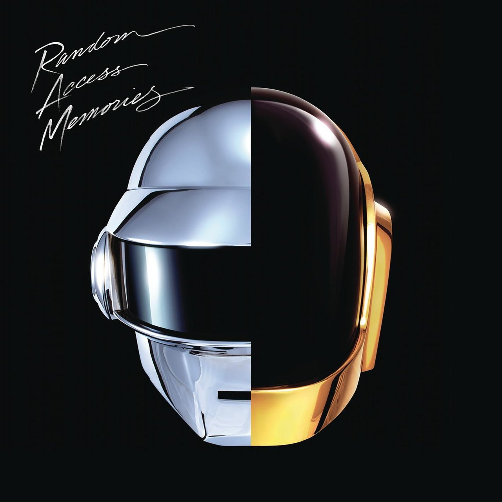
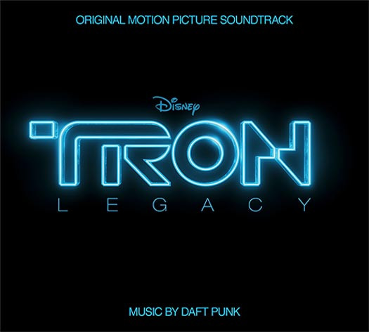

Albums Studio
|
 HomeworkPremier Album sorti en 1997, il révolutionne et popularise la "French Touch". L'ambiance est typique des rave des années 90. Il obtient 2 nominations aux Grammy Awards et de multiples disques d'or et de platine. |
 DiscoverySecond Album sorti en 2001, cet album redéfinit la pop électronique. Il change d'ambiance par rapport a Homework pour une ambiance pop et nostalgique. Il cumule 2 nominations aux Grammys, de nombreux disques d'or et un triple platine en France. |

Human After AllTroisième album sorti en 2005 et enregistré en 6 semaines, l'ambiance est sombre, froide et agressive, prenant le contre-pied total de la joie de Discovery. Il reçoit 1 nomination aux Grammys et un double disque d'or en France. |
|
 Random Access MemoriesQuatrième album sorti en 2013, il prend l'industrie à contre-pied en revenant à des enregistrements 100% analogiques. L'atmosphère froide de Human After All laisse place à une musique typique des années 70/80. Un triomphe absolu : 5 Grammy Awards et un disque de diamant en France. |

RAM (10ème Anniversaire)Sorti en mai 2023, cette réédition ajoute des démos inédites. Elle relance l'album dans les charts, mais sans chercher de nouvelles récompenses. |
Albums Live

Alive 1997Premier Album Live sorti en 2001, ce live de 45 minutes capte l'énergie de leur première tournée. L'ambiance est frénétique, transpirante et beaucoup plus intense que l'album studio Homework. C'est un succès et une œuvre culte, sans certifications massives. |

Alive 2007Second Album Live sorti en 2007, il révolutionne les concerts d'électro avec la fameuse Pyramide LED avec un mashup parfait de leurs 3 albums.Il remporte 2 Grammy Awards et de nombreux disques d'or/platine. |
Bandes Originales & EP (Bonus)

Da FunkPremier EP sorti en 1998, c'est le morceau fondateur qui les révèle au monde. L'ambiance est urbaine, fusionnant le groove lourd du hip-hop aux sirènes techno. Ce classique obtient 1 nomination aux Grammys, un disque d'or en France et un disque d'argent au Royaume-Uni.. |
 Tron LegacyBande son de TRON sorti en 2010, elle prouve leur génie cinématographique en mêlant synthétiseurs et orchestre symphonique. C'est une rupture totale avec leurs albums clubs, offrant une atmosphère dramatique, sombre et épique. Elle obtient 1 nomination aux Grammys et plusieurs disques d'or mondiaux. |